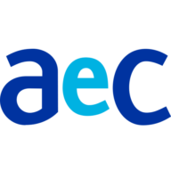

Disponível para novos desafios
Infraestrutura sólida.
Software que evolui.
Sou Gabriel Brito, profissional de TI com experiência em suporte e infraestrutura, construindo minha trajetória em Engenharia de Software e desenvolvimento backend.

01 / SOBRE
Visão completa do código ao ambiente.
Atuo na interseção entre infraestrutura de TI e desenvolvimento de software, unindo experiência em ambientes corporativos à construção de aplicações modernas. Minha vivência com servidores, redes e operações me proporciona uma visão completa do ciclo de vida das aplicações, desde o desenvolvimento até a implantação, monitoramento e sustentação em produção.
Atualmente desenvolvo aplicações utilizando Java, Spring Boot, APIs REST e bancos de dados relacionais, aplicando boas práticas de desenvolvimento para criar soluções escaláveis, organizadas e de fácil manutenção. Estou em constante evolução como Engenheiro de Software, buscando transformar desafios de negócio em soluções eficientes e de qualidade.
02 / PROJETOS
Código em movimento.
03 / EXPERIÊNCIA
Construindo confiança em ambientes reais.
STEFANINI GROUP
Analista de Suporte Sênior N2
Atuação na resolução de incidentes críticos em ambientes corporativos, administração de Active Directory, automação de processos com KACE e suporte a implantações e migrações de infraestrutura, garantindo a continuidade dos serviços.

AEC CONTACT CENTER
Técnico de Suporte e Infraestrutura — Pleno
Administração de Data Center e servidores Windows, gerenciamento de DNS, DHCP e GPO, além do monitoramento de ambientes com SolarWinds e Grafana, assegurando disponibilidade, desempenho e estabilidade dos serviços.
04 / TECH STACK
Ferramentas para resolver problemas de verdade.
Backend
Desenvolvimento de serviços, APIs e regras de negócio.
Infraestrutura
Administração e sustentação de ambientes corporativos.
Dados & Observabilidade
Dados relacionais, relatórios e monitoramento operacional.
05 / FORMAÇÃO
Aprendizado contínuo.
06 / CONTATO
Vamos construir algo relevante?
Estou aberto a oportunidades, conexões e projetos em tecnologia.